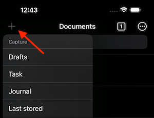
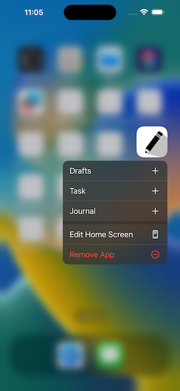
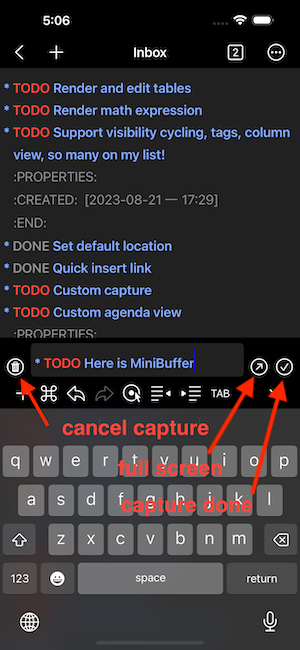

终于，自定义 Capture 功能开发测试完成。
1. Capture 功能是什么
Metanote 中自定义 Capture 功能通过自定义目标文件，自定义内容模版等方式实现快速记录、收集想法，任务和素材等功能。通过合理地自定义适合自己日常工作流的 Capture 模版能够极大的提高信息收集和管理的效率。
2. Capture 功能使用
2.1. 使用 Capture ATTACH
在 Metanote 的任意功能界面中您都可以通过导航栏左侧“+”按钮打开 Capture 功能入口，选择默认或自定义的模版，您可以在设置中自定义 Capture 模版(注意，需要 Metanote 高级版)
另外一个非常方便的使用方式是通过 App icon 的 3D-touch 弹出的快捷菜单进行 capture ，这将允许您在不打开 app 情况下直接进行 capture.


2.2. 使用 MiniBuffer
MiniBuffer 使您可以在不离开当前编辑窗口的情况下直接在一个 mini 窗口中记录内容，这样您可以边参考当前窗口内容边记录笔记，而且您可以随时在两个窗口中切换，甚至在两个窗口中编辑同一个文件的不同部分，这并不会有任何问题。
您可以在“设置”中选择在 capture 时是否使用 MiniBuffer，默认为“自动”选择使用 MiniBuffer 或全屏窗口 capture。

2.3. 保存 Capture 内容
使用 MiniBuffer 时点击确认按钮则保存并退出 MiniBuffer；在全屏状态下同编辑文件，退出编辑自动保存
2.4. 取消 Capture
capture 时偶尔会出现没想好，中途取消 capture 的情况，此时只需点击“删除”按钮一切就都会恢复原样。
2.5. 快速访问最后 Capture 的文件
如果您忘记了 capture 的内容存在了哪里，使用导航栏左测菜单中的“最后保存”功能直接打开最后一次 capture 编辑的文件
2.6. 默认模版
Metanote 中默认提供了三个最常见的 Capture template，分别对应不同的使用场景，Metanote 高级版支持自定义任意多个 Capture template，并可以修改为删除默认模版。
2.6.1. 草稿
"草稿" 会在根目录下新建一个以当前时间为文件名的空白文件，文件名格式可以设置中自定义，取消 capture 会自动删除该文件，适合快速记录一个临时文件，草稿或想法供稍后整理。
2.6.2. 待办
"待办" 会在根目录下的 "Index.org" 文件中追加一个待办任务，适合快速记录一个待办事项。
2.6.3. 日志
"日志" 会在根目录下的 "日志.org" 文件中自动以当前日期的年月日组织 headline，在 org mode 称为 datetree，适合记日记。
3. 自定义 Capture 模版
3.1. template target
设置 capture 的内容保存的位置，比如某文件中的某个 headline 下面
3.1.1. file
capture 内容保存到指定文件。可以直接选择已存在的文件，或选择文件夹，如果选择文件夹则需要提供一个文件名的模版，支持 template expansion 语法，如果文件已存在则会直接使用，如果文件不存在则会自动创建
3.1.2. file+headline
capture 的内容保存到指定文件的指定 headline 中，以 headline 的 title 匹配，如果 headline 不存在则自动创建
3.1.3. file+olp
olp 全称为 outlin path，逐级定义目标 headline，任意一级 headline 不存在都将自动创建
3.1.4. file+olp+datetree
根据日期选择目标 headline，olp 为可选
3.2. template type
指定 capture template 内容的类型，可为 主题（entry）, 列表（item） 或 任意（plain）
3.3. template properties
设置 capture template 一些形为
- prepend 设置从头部还是尾部插入
- immediate-finish 设置不弹出编辑窗口，直接保存，在记录一些自动内容时非常方便
- empty-line-before 设置 capture 内容与前面内容之间保留几个空行
- empty-line-after 设置 capture 内容与后面内容之间保留几个空行，这在插入列表时很有用
- time-prompt 设置在 target 为 datetree 的情况下不使用当前日期而是交互式的选择日期
- tree-type 设置 datetree 使用月份还是周数
- unnarrowed 设置编辑 capture 时不使用 narrowed buffer，直接编辑整个文件
3.4. template expansion
可以在 template 中使用的一些占位符，在 capture 时这些占位符将自动填充指定内容。
- %<FORMAT> 按 "FORMAT" 格式化当前时间日期，注意，不同于 org mode，"FORMAT" 使用 Unicode 标准，见 https://www.unicode.org/reports/tr35/tr35-31/tr35-dates.html#Date_Format_Patterns
- %t 插入 org mode active 时间戳，仅当前日期
- %T 插入 org mode active 时间戳，包括当前日期和时时间
- %u, %U，同上，但插入 inactive 时间戳
- %i 发起 capture 时当前编辑窗口选中的内容
- %f 发起 capture 时当前编辑窗口编辑的文件名
- %F 发起 capture 时当前编辑窗口编辑的文件的完整路径
- %^g 交互式插入当前 Buffer 中的 Tag
- %^G 交互工插入全局 Tag
- %^t, %^T, %^u, %^U 交互式插入 org mode 时间戳
- %^{PROP}p 交互式插入 property
- %^{PROMPT} 交互式插入编辑内容
- %N 插入第 N 个 PROMPT，注意，不同于 org mode，数字前无需转义
- %? 光标位置
3.5. Org mode 的支持情况
此部分内容仅供了解 Org mode 的用户参考，不熟悉 Org mode 可以直接跳过。Metanote 是对 Org mode 支持最完整的 app，对于自定义 Capture 功能同样支持了 Org mode 大部分常用自定义 Capture 设置项，以下是详细支持情况:
3.5.1. template type
[X]entry 支持[X]item 支持[X]checkitem 支持，使用 item 实现[X]plain 支持[ ]table-line 暂不支持，稍后集中处理表格时统一支持
3.5.2. target
[X]file 支持[ ]id 暂不支持，稍后实现 org-roam 时统一支持[X]file+headline 支持[X]file+olp 支持[ ]file+regexp 暂不支持，未测试出 org mode 此 target 的功能逻辑，在不同的 template type 下表现都不一至[X]file+olp+datetree 支持[ ]file+function 暂不支持，由于 Metanote 尚未支持 elisp，因此暂时无法支持 function[ ]function 暂不支持，同上，但做为补尝，在 Metanote 中支持自定义文件名，选择好目录后可以使用与 template 内容相同的语法定义文件名，这样就允许 capture 时动态的选择或创建不同的文件[ ]clock 暂不支持，稍后集中处理 clock 相关功能时统一支持
3.5.3. properties
[X]:prepend 支持[X]:immediate-finish 支持[X]:empty-line-before 支持[X]:empty-line-after 支持[ ]:clock-in 暂不支持，集中实现 clock 相关功能统一支持[ ]:clock-keep 暂不支持，集中实现 clock 相关功能统一支持[ ]:clock-resume 暂不支持，集中实现 clock 相关功能统一支持[X]:time-prompt 支持[ ]:tree-type 支持[X]:unnarrowed 支持[ ]:table-line-pos 暂是支持，集中处理表格时统一支持[ ]:kill-buffer 不支持，Metanote 已自动实现此功能[ ]:no-save 不支持，Metanote 已自动实现此功能
3.5.4. template expansion
[ ]%[FILE] 暂不支持[ ]%(EXP) 暂不支持[X]%<FORMAT> 支持[X]%t 支持[X]%T 支持[X]%u, %U 支持[X]%i 支持[ ]%a 暂不支持[ ]%A 暂不支持[ ]%l 暂不支持[ ]%c 下一个版本支持[ ]%x 下一个版本支持[ ]%k 暂不支持[ ]%K 暂不支持[ ]%n 不支持，Metanote 中不存在 user name[X]%f 支持[X]%F 支持[ ]%:keyword 暂不支持[X]%^g 支持[X]%^G 支持[X]%^t, %^T, %^u, %^U 支持[ ]%^C 下一个版本支持[ ]%^L 下一个版本支持[X]%^{PROP}p 支持[X]%^{PROMPT} 支持[X]%N 支持[X]%? 支持